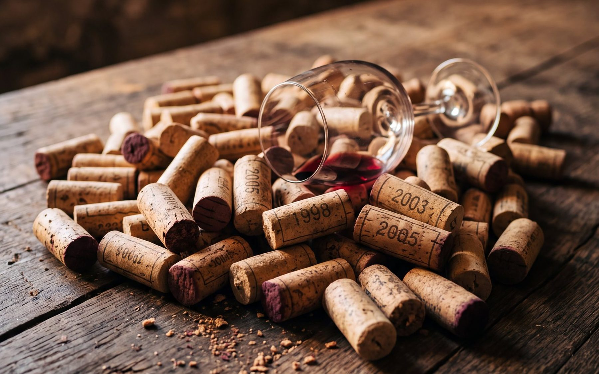
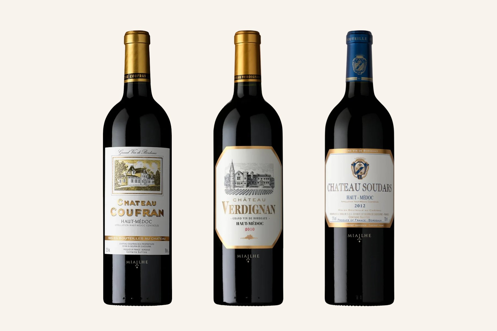

Choisir un bordeaux sans se tromper : lire l’étiquette en 5 points
Devant un rayon de vins, les étiquettes se ressemblent et les prix varient du simple au triple. Pas besoin d’être œnologue pour bien choisir : cinq informations, toutes écrites sur la bouteille, suffisent à se repérer.

1. L’appellation : d’où vient le vin
L’appellation d’origine protégée, souvent encore écrite AOC, garantit que le vin vient d’une zone précise et respecte des règles de production : cépages autorisés, rendements, méthodes. À Bordeaux, les appellations s’emboîtent comme des poupées russes :
- Bordeaux et Bordeaux Supérieur couvrent toute la région ;
- les appellations sous-régionales, comme Médoc ou Haut-Médoc, désignent une partie du vignoble ;
- les appellations communales, comme Saint-Estèphe, Pauillac ou Margaux, désignent quelques communes.
En général, plus l’appellation est précise, plus ses règles sont exigeantes et plus le vin exprime un lieu particulier. Les trois châteaux de la famille Miailhe sont en appellation Haut-Médoc.
2. Le millésime : l’âge du vin
Le millésime est l’année de la vendange. Il renseigne sur deux choses : l’âge du vin, donc le moment où il sera à son meilleur, et le climat de l’année, plus ou moins favorable.
Un bordeaux rouge de cinq à dix ans est souvent plus ouvert qu’un vin tout juste sorti. Si vous voulez ouvrir la bouteille rapidement, cherchez un vin prêt à boire, ou demandez conseil.
3. « Mis en bouteille au château »
Cette mention signifie que le vin a été mis en bouteille sur la propriété même où il a été produit. Le château a suivi son vin jusqu’au bout, de la vigne à la bouteille.
La mention « mis en bouteille par », suivie du nom d’un négociant, signifie que le vin a été mis en bouteille ailleurs. Ce n’est pas un défaut, mais une autre organisation : à Bordeaux, les négociants jouent un rôle historique dans l’élevage et la distribution des vins.
4. Le nom du château, et la famille derrière
À Bordeaux, un « château » ne désigne pas forcément un monument, mais une exploitation viticole qui produit son vin à partir de ses propres vignes. Retenir le nom d’un château que l’on a aimé est le moyen le plus simple de le retrouver.
Certaines familles possèdent plusieurs châteaux, chacun avec son style. C’est le cas de la famille Miailhe, avec Coufran, Verdignan et Soudars : trois étiquettes différentes, trois caractères, une même famille.

5. La contre-étiquette : les bons conseils
Au dos de la bouteille, on trouve d’abord les mentions obligatoires : le degré d’alcool, le volume, la présence de sulfites, le numéro de lot et le logo destiné aux femmes enceintes. Beaucoup de producteurs y ajoutent des informations précieuses : l’assemblage des cépages, la température de service, la durée de garde conseillée, parfois des idées d’accords.
Si vous ne savez pas quel style vous plaît, l’assemblage est un bon indice : un vin riche en merlot sera plutôt rond et souple, un vin riche en cabernet-sauvignon plutôt structuré. Notre article sur la différence entre merlot et cabernet vous aide à vous y retrouver.
Et le prix ?
Le prix reflète en partie le terroir, le travail à la vigne et au chai, et le temps de garde. Un vin que le château a gardé plusieurs années avant de le vendre a demandé de la place, du soin et de la patience.
Le meilleur repère reste votre goût. Notez le nom des vins que vous avez aimés, et n’hésitez pas à comparer deux styles côte à côte.
Où trouver les vins de la famille Miailhe ?
Coufran et Verdignan sont proposés dans des magasins Auchan, E.Leclerc, Carrefour et Intermarché, et Soudars chez les cavistes V and B, selon les points de vente. La carte des magasins indique où les trouver près de chez vous. La boutique de la famille livre aussi les trois châteaux partout en France métropolitaine.
Questions fréquentes
Que veut dire AOC sur une bouteille de vin ?
AOC signifie appellation d’origine contrôlée ; on parle aujourd’hui d’AOP, appellation d’origine protégée. Elle garantit l’origine géographique du vin et le respect de règles de production propres à cette appellation.
Un vin plus cher est-il forcément meilleur ?
Pas forcément. Le prix dépend du terroir, de la réputation, du travail et du temps de garde. Le meilleur vin est celui qui vous plaît : notez les noms des vins que vous aimez pour les retrouver.
Que signifie « mis en bouteille à la propriété » ?
Comme « mis en bouteille au château », cette mention indique que le vin a été mis en bouteille sur le domaine qui l’a produit.
L’abus d’alcool est dangereux pour la santé, à consommer avec modération.